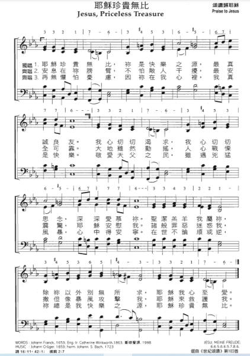

0425 0830 Jesus, Priceless Treasure 耶穌珍貴無比 ▲ JESU, MEINE FREUDE
| 簡介
Jesus,
Priceless Treasure |
| The classic marriage of words and
music that characterizes German chorales can be seen well in this simple
but intense text voiced by an already elegant tune that Bach burnishes
in his harmonization. Text and tune evoke each other and reinforce the
ardor of those who sing. |
|
|
【耶穌珍貴無比】
詩集：世紀頌讚，103 |
|
1 Jesus, priceless treasure,
source of purest pleasure,
friend most sure and true:
long my heart was burning,
fainting much and yearning,
thirsting, Lord, for you.
Yours I am, O spotless Lamb,
so will I let nothing hide you,
seek no joy beside you!
2 Let your arms enfold me:
those who try to wound me
cannot reach me here.
Though the earth be shaking,
every heart be quaking,
Jesus calms my fear.
Fires may flash and thunder crash;
yea, though sin and hell assail me,
Jesus will not fail me.
3 Hence, all worldly treasure!
Jesus is my pleasure,
Jesus is my choice.
Hence, all empty glory!
What to me your story
told with tempting voice?
Pain or loss or shame or cross
shall not from my Savior move me,
since he chose to love me.
4 Banish thoughts of sadness,
for the Lord of gladness,
Jesus, enters in;
though the clouds may gather,
those who love the Savior
still have peace within.
Though I bear much sorrow here,
still in you lies purest ple
|
耶穌珍貴無比，你是快樂之源，最真誠良友。
我心切切渴求，我心切切思念，深深愛慕你。
聖潔羔羊我屬你，除你以外別無所求，耶穌我心至愛。
安息在你膀臂，不怕敵人干擾，最安全可靠。
大地雖然動搖，人心戰憟震驚，耶穌安慰我。
諸般罪惡迷惑我，撒但像暴風攻擊我，耶穌來救護我。
再無懼怕憂慮，因你在我心裡，我真是快樂。
敬愛天父之民，雖遇兇猛風暴，心中得安寧。
在世不論順或逆，你總是我快樂之源，耶穌珍貴無比。
【耶穌你最寶貴】
詩集：恩頌聖歌，316
耶穌你最寶貴，是我歡樂安慰，我親愛良朋；
深深受你吸引，我心切慕追尋，求瞻神聖容；
我願歸你，聖羔羊，除你以外，
一無所求，向你一無保留。
安心靠你膀臂，仇敵雖然追迫，我必不遭害；
大地縱然震動，人心慌惶驚恐，你安鎮我懷；
罪惡魔權已戰敗，縱逞威力攻擊破壞，
靠你我不受害。
耶穌你已進來，喜樂充滿心內，煩憂驅心外；
天父所愛兒女，縱然遭遇風雨，平安滿心懷；
世上雖然多災難，主內必有歡樂。安慰，
耶穌你最寶貴。 |
https://www.hkhymnsoc.org/wp-content/uploads/2017/11/why06booklet.pdf

 |
| |
|
http://www.tstscc.org/flash-news/%E6%9C%88%E8%A9%A9%E7%B0%A1%E4%BB%8B202106.html
Johann Franck
(約翰·弗蘭克1618 -1677 ) 生於德國布蘭登堡的古本 (Guben, Brandenburg)，是柯尼斯堡 (Köningsberg)大學的法學院學生，並在三十年戰爭期間從事法律工作。
他曾擔任多個公務員職位，包括古本市議員和市長。 弗蘭克是一位重要的詩人，他寫了大約 110 首讚美詩。

本詩歌原為德文創作，共有6節歌詞，於1863年由英國人Catherine Winkworth翻譯成英文，於1863年收集在她編輯的詩集 Chorale
Book for England中，現時大部份詩集只收集了其中3節；1998年由鄭棣聲先生翻譯為中文並收集於《世紀頌讚》中。
曲調JESU, MEINE FREUDE由Johann
Crüge於1653年寫成，以AAB 曲式展現。巴赫 ( Johann S. Bach) 後期將此曲調融入他的清唱劇12, 64, 81, and
87的樂章中，並創作了一首美妙的經文歌及幾首管風琴前奏曲。

這首讚美詩的內容來自馬太福音13:44-46中隱藏的寶藏和寶貴珍珠的比喻。在馬太福音中，我們想起了天上財寶的重要性：「因為你的財寶在那裡，你的心也在那裡。」（馬太福音
6:21）。 這首讚美詩表達了個人對耶穌基督的渴慕，及祂對基督徒無比巨大的價值。在詩篇中亦有類似的方式宣告：「神啊，我的心切慕你，如鹿切慕溪水。」（詩篇
42:1）。歌詞形容耶穌是喜樂和愛的根源，雖然我們遇到兇猛風暴，但主是我們的避難所，祂是世上最偉大、最貴重的珍寶。
參考資料
Jesus, priceless treasure
Johann Franck
https://hymnary.org/text/jesus_priceless_treasure
Notes
Scripture References:
st. 1 = Matt. 13:44-46, John 15:1-4
st. 3 = Ps. 73:25, Phil. 3:8
The original German text
“Jesu, meine Freude” by Johann Franck (PHH
305) first appeared in Johann Crüger's Praxis Pietatis Melica (1653)
in six long stanzas. The text was modeled in part after a love song found in
Heinrich Albert's Arein (1641), "Flora, meine Freude, meiner
Seele Weide."
Catherine Winkworth (PHH
194) translated the text into English and published it in her Chorale
Book for England (1863). Our version includes the original stanzas 1,
2, 4, and 6. Much loved by Christians from various traditions, “Jesus,
Priceless Treasure” is one of the finest examples of German piety in a
devotional hymn. The intensity of emotional expression found here provides a
suitable counter¬ balance to the cerebral character of much Reformed
worship.
Inspired by Jesus'
parables of the great treasure and fine pearl (Matt. 13:44-46) and other New
Testament references to the metaphor "treasure," this text is strongly
Christocentric. Stanza 1 confesses with mystical ecstasy that Christ is the
source of purest pleasure (a bold affirmation that counters the hedonism of
this world). Stanza 2 expands the metaphor: Christ our treasure is also our
fortress, our defense and protector from the "sin and hell" that would
"assail" us. Stanza 3 contrasts the eternal pleasures of knowing Jesus with
the "empty" delights of this world. And stanza 4 affirms that, despite the
fears and sorrow we must bear, Jesus remains our greatest treasure and
source of profound joy.
Liturgical Use
As a hymn of devotion and trust and a testimony of our joyous commitment to
Christ amid the temptations of contemporary life; after Lord's Supper;
profession of faith.
--Psalter Hymnal
Handbook
In Matthew's gospel, we are reminded of the importance of lasting heavenly
treasure, and its relation to our devotion: “For where your treasure is, there
your heart will be also” (Matthew 6:21 ESV). This hymn is a very personal
expression of devotion to Jesus Christ, and of His incomparably great value to
the Christian. The desire for communion with Christ is declared in a similar way
in the Psalms: “As a deer pants for flowing streams, so pants my soul for you, O
God” (Psalm 42:1 ESV).
Text:
This hymn was translated by Catherine Winkworth from a German text by Johann
Franck. He patterned the meter and the first two lines of his text on an
earlier, secular love song, “Flora, meine Freude, meine Seele Weide,” by
Heinrich Albert. This song had only one stanza and was published in 1641 in
Albert's Arien, part 4.
Franck's original text had six stanzas, and Winkworth translated all but the
third in her Chorale Book for England, which appeared in 1863. Most
hymnals include at least stanzas 1, 2, and 6 of the original, with a few
including all six. There is a fair amount of variance between hymnals on the
wording of various lines. Most of these alterations do not significantly affect
the meaning of the text.
The theme of the text is a pietistic devotion to Jesus Christ. Different stanzas
focus on the aspects of this theme, describing Jesus as the source of our
greatest joy and love, as our refuge, and as a treasure of greater value than
all the wealth and glory the world can offer. The suffering of life in a broken
world is acknowledged, but Jesus is declared to be worth it all.
Tune:
Johann Crüger is the composer of this well-known chorale tune, JESU, MEINE
FREUDE. It was composed for and named after Franck's text, and first appeared
with it in Crüger's Praxis Pietatis Melica, published in Berlin in
1653.
J. S. Bach used this chorale in several of his works, including his famous motet
for five singers (BWV 227). The text of the eleven movements of the motet was
the six stanzas of this hymn plus selections from Romans 8. Many hymnals use
Bach's harmonization from the first and last chorale movements of this motet as
a setting for this hymn.
Notes
Johann Crüger (PHH 42) composed JESU, MEINE FREUDE, a bar form tune (AAB)
written for this text. Johann S. Bach (PHH 7) incorporated the tune into his
cantatas 12, 64, 81, and 87 and composed a beautiful motet and several organ
preludes on the melody.
Sing this great chorale in harmony throughout. For more elaborate and
meditative use intersperse the sung stanzas with organ preludes on the tune.
--Psalter Hymnal Handbook, 1987
^ top
When/Why/How:
This hymn may have been inspired by the Parables of the Hidden Treasure and the
Pearl of Great Value in Matthew 13:44-46, and may be sung for services on this
theme. Like other well-known German chorales, this tune is popular with organ
arrangers. “Voluntaries
for Worship” contains an organ setting of JESU, MEINE FREUDE based on Bach's
setting of the fifth stanza from his motet, “Jesu, meine Freude.” Other
ornamented settings of the tune for organ by well-known arrangers Michael
Burkhardt and Paul Manz can be found in the collections “Thine
the Glory” and “Improvisations
on Classic Chorales.”
Tiffany Shomsky,
Hymnary.org
https://www.glorypress.com/twstore/product.asp?Categoryid=&sku=A74-29
Daily Bible Study for God's Promise
作者: 林三民 Joseph Lin
出版社: 大光
上帝豐富的應許，充滿在全本聖經中。其實，聖經中的應許，大約有一萬個之多，每一個應許都是上帝開給基督徒的一張支票，等待著讀經的人用信心去背書，並且去兌換。
舊約中主名的應許，共收集了90個，主無與倫比珍貴的名字，是舊約中閃亮的鑽石，值得我們仔細研讀默想。
親愛的讀者，這是一趟奇妙之旅，從創世記到瑪拉基書，竟然蘊藏了這麼豐富的真理。每一個主的名字，都是那麼獨特而奧秘，若能反覆閱讀，你會希奇上帝的愛，何等細膩。祂的肯定，使世人的生命變為無價，即便當患難吞沒了生存的勇氣，腦際浮現的應許，必能成為你即時的幫助。
讓我們用謙卑的靈，禱告的心來研讀領受，藉著聖靈的幫助，秉持信心與決心，把主的每一個應許珍藏在你心中，使主的應許成為你的生命。
舊約中主名的應許
001栍盾牌——投靠在主裡面/002栍盾牌——藏身在主裡面/003栍天梯——行走在主的應許中/004栍天梯——安息在主的應許中/005栍細羅——賜平安的主/006栍細羅——守約施慈愛的主/007栍力量——患難中隨時的幫助/008栍力量——使我穩行在高處/009栍鷹——將你們背在翅膀上/010栍鷹——帶來歸我
011栍至高者——至高無上/012栍至高者——獨一無二的主/013栍不輕易發怒——有憐憫有恩典的主/014栍不輕易發怒——有豐盛慈愛的主/015栍星——照明引導的主/016栍星——應許盼望的主/
017栍杖——赦罪施恩的主/018栍杖——安慰牧養的主/019栍磐石——拯救的力量/020栍磐石——永久的倚靠
021栍元帥——領導我們爭戰的主/022栍元帥——領導我們進入榮耀的主/023栍拯救的角——拯救的主/024栍拯救的角——力量的主/025栍聽訟的人——為人辯護的主/026栍聽訟的人——為兩造按手的主/027栍救贖主——買贖我們的主/028栍救贖主——救拔我們的主/029栍受膏者(彌賽亞)
——施恩的主/030栍受膏者(彌賽亞) ——賜福的主
031栍居所——與人同在的主/032栍居所——與人同住的主/033栍避難所——隨時幫助的主/034栍避難所——與我們同在的主/035栍引路者——引導方向的主/036栍引路者——指點迷津的主/037栍幫助——堅固你的主/038栍幫助——扶持你的主/039栍窯匠——創造的主/040栍窯匠——主宰的主
041栍香膏——為人成聖的主/042栍香膏——安慰醫治的主/043栍一袋沒藥——將主藏在懷中/044栍一袋沒藥——將主迎進園中/045栍一棵鳳仙花——芳香的主/046栍一棵鳳仙花——喜樂的主/047栍良人——基督屬我/048栍良人——我屬基督/049栍沙崙的玫瑰花——主帶我入筵宴/050栍沙崙的玫瑰花——以愛為旗在我以上
051栍谷中的百合花——聖潔尊貴的主/052栍谷中的百合花——醫治供應的主/053栍蘋果樹——甘甜的主/054栍蘋果樹——親暱的主/055栍羚羊和小鹿——深情的主/056栍羚羊和小鹿——體貼的主/057栍全然可愛——超乎萬人之上的主/058栍全然可愛——貫乎萬人之中的主/059栍山寨——主是危險中的堅固堡壘/060栍山寨——主是急難中的引導
栍高台——大有力量的主/062栍高台——永不動搖的主/063栍聖所——以馬內利的主/064栍聖所——垂看垂聽的主/065栍保障——保護拯救的主/066栍保障——供應扶持的主/067栍條和枝子——供應生命的主/068栍條和枝子——維持生命的主/069栍萬民的大旗——得勝榮耀的主/070栍萬民的大旗——安息慈愛的主
071栍朋友——為人捨命的主/072栍朋友——負罪擔憂的主/073栍根基————信靠的人必不著急/074栍栍根基——信靠的人必不羞愧/075栍避風所——蔭庇之所/076栍避風所——藏身之處/077栍威嚴的主——尊榮大能的主/078栍威嚴的主——榮耀得勝的主/079栍餵養者——供應一切的主/080栍餵養者——滿足一切的主
081栍以色列的聖者——揀選的主/082栍以色列的聖者——救贖的主/083栍耶和華的膀臂——全能的主/084栍耶和華的膀臂——全智的主/085栍我的僕人——主所揀選的人/086栍我的僕人——主所喜稅的人/087栍所揀選的——順服的主/088栍所揀選的——犧牲的主/089栍約——恩典的主/090栍約——更完美的主
091 女人的後裔——十架救贖的應許/092 女人的後裔——以馬內利的應許/093 上帝的羔羊——除去世人罪孽的主/094
上帝的羔羊——智慧、能力、尊貴、榮耀的主/095獅子——得勝的主/096 獅子——超越的主/097 先知——傳揚上帝真道/098 先知——分享生命之道/099
所羅門——太平之人/100 所羅門——安息之主
101 產業——主是我的產業/102 產業——我是主的產業/103 背負重擔的——撫養你的主/104 背負重擔的——賜你安息的主/105
耶和華——施行諸般救恩的主/106 耶和華——天天背負我們重擔的主/107 蜂房——滴下恩惠與慈愛/108 蜂房——供應生命與愛情/109
至精的金子——榮耀的主/110 至精的金子——尊貴的主
111 奇妙策士——行事奇妙的主/112 奇妙策士——無所不知的主/113 全能的上帝——絕對神聖的主/114 全能的上帝——無所不能的主/115
永在的父——永恆的主/116 永在的父——慈憐的父/117 和平的君——成就和平的主/118 和平的君——賞賜平安的主/119 屬天的修補/120 屬天的修補者
121 設律法的——使我們分別為聖/122 設律法的——使我們長大成熟/123 雅各——救贖的主/124 雅各——牧養的主/125
古列——牧養失散的羊/126 古列——釋放被擄的民/127 耶路撒冷——平安的根基/128 耶路撒冷——鞏固的居所/129 常經憂患者——擔當憂患的主/130
常經憂患者——背負痛苦的主
131 丈夫——造你、愛你的主/132 丈夫——贖你、聘你的主/133 君王和司令——領導我們的主/134 君王和司令——引導我們的主/135
上帝的榮光——臨在的主/136 上帝的榮光——賜福的主/137 新郎——與主合一/138 新郎——與主同行/139 使者——拯救引領的主/140
使者——陪伴保護的主
141 松樹——住在祂蔭下/142 松樹——從祂得果子/143 甘露——賜人福氣的主/144 甘露——供應恩典的主/145
亙古常在者——創造時間的主/146 亙古常在者——超越時間的主/147 萬國所羨慕的——賜平安的主/148 萬國所羨慕的——賜福份的主/149
泉源——洗除罪惡污穢/150 泉源——供應生命安息
151 立約的使者——守約施慈愛/152立約的使者——信實給應許/153 公義的日頭——生命之光/154 公義的日頭——醫治之能/155
以色列——作上帝的王子/156 以色列——使上帝得榮耀/157 以色列審判者——公義正直的主/158 以色列審判者——慈愛憐憫的主/159
主耶和華——信實守約的主/160 主耶和華——賜人慈愛生命的主
161 創造者——使無變有的主/162 創造者——托住萬有的主/163 冕旒——得榮耀、尊貴、權能的主/164 冕旒——賜公義喜樂、生命的主/165
耶和華我們的義——使我們因信稱義的主/166 耶和華我們的義——使我們與上帝和好的主/167 苗裔——公平公義的主/168 苗裔——籌定和平的主/170
大衛——立永約的君王
171 磨亮的箭——大能的主/172 磨亮的箭——拯救的主/173 米迦勒——爭戰得勝的主/174 米迦勒——見證得力的主/175
以色列中作掌權的——掌權拯救的主/176 以色列中作掌權的——管理牧養的主/177 王——智慧權能的主/178 王——榮耀真誠的主/179
煉金之人——試煉人心的主/180 煉金之人——熬煉成精金/
181 漂布之人——洗除罪孽的主/182 漂布之人——潔淨罪惡的主 栍 栍栍𨘀冸
https://www.glorypress.com/twstore/product.asp?Categoryid=44&sku=A74-30
Daily Bible Study for God's Promise
作者: 林三民 Joseph Lin
出版社: 大光
新約中主名的默想，共收集了92個，主耶穌珍貴無比的名字。從馬太福音到啟示錄，祂那超乎萬名之上的名字，帶著能力、賜福、權柄、安慰、生命和幫助。
若你能進入內室關上門，俯伏在主施恩座前，舉目仰望，必親眼得見主面。
上帝豐富的應許充滿在全本聖經中。其實，聖經中的應許大約有一萬個之多，每一個應許都是上帝開給基督徒的一張支票，等待著讀經的人用信心去背書並且去兌換。
聖經中的應許共分(一)、(二)兩冊，包括了182個新舊約中主名的應許。讓我們用謙卑的靈，禱告的心來研讀領受，深願藉著聖靈的幫助，秉持信心與決心，把主的每一個應許珍藏在你心中，使主的應許成為你的生命和力量。
新約中主名的應許
183 大衛的子孫——救贖的大君王/
185 耶穌——施行救恩的主/
186 耶穌——賞賜永生的主/
187 以馬內利——上帝與我們同在/
188 以馬內利——上帝與我們同行/
190 拿撒勒人——卑微的主
191 夫子、拉比——最好的老師/192 夫子、拉比——最棒的輔導/193 醫生——醫治一切的疼痛/194 醫生——消除一切的憂傷/195
罪人的朋友——為你捨命的主/196 罪人的朋友——賜你生命的主/197 人子——受苦服事人的主/198 人子——捨命救贖人的主/199
上帝的聖者——完全聖潔的主/200 上帝的聖者——永不朽壞的主
201 兄弟——照顧保護的主/202 兄弟——安慰扶持的主/203 木匠——修理建造的主/204 木匠——勞苦工作的主/205
清晨的日光——照亮指引的主/206 清晨的日光——生命平安的主/207 以色列的安慰者——安慰扶持的主/208 以色列的安慰者——了解認同的主/209
救恩——拯救幫助的主/210 救恩——拯救得勝的主
211 嬰孩——奇妙策士、全能的上帝/212 嬰孩——永在的父、和平的君/ 213 孩童耶穌——以天父的事為念/214
孩童耶穌——得著上帝和人的喜愛/215 債主——憐憫恩典的主/216 債主——慈愛善良的主/ 217 好撒瑪利亞人——你的好鄰舍/218
好撒瑪利亞人——你的好弟兄/219 肥牛犢——犧牲捨命/220 肥牛犢——喜樂滿足
221 加利利人——呼召事奉的主/222 加利利人——餵養供應的主/223 道——生命之光/224 道——救贖之恩/225 獨生子——獨特唯一的主/226
獨生子——至極所愛的主/227 上帝、神——永恆不變全能的主/228 上帝、神——聖潔仁愛信實的主/229 基督——供應保護的主/230 基督——拯救賜福的主
231 銅蛇——救贖醫治的主/232 銅蛇——吸引萬人的主/233 猶太人——與人同受苦難的主/234 猶太人——賜人救恩應許的主/235
活水——救恩的泉源/236 活水——永生的恩賜/238 救主——釋放幫助的主/ 239 生命的糧——供應生命的主/240 生命的糧——滿足飢渴的主
241 世界的光——照亮引導的主/242 世界的光——甦醒充滿的主/243 我是——無限豐富的主/244 我是——永恆超越的主/245
好牧人——引領保護的主/246 好牧人——供應眷顧的主/247 門——供應豐盛救恩的主/248 門——供應自由生命的主/249 復活和生命——勝過死亡/ 250
復活和生命——得著永生
251 道路——通往上帝/252 道路——引到永生/253 真理——絕對永恆不變的主/254 真理——充充滿滿得著自由/255
生命——豐盛、光明、自由、得勝/256 生命——平安、喜樂、飽足、永生/257 真葡萄樹——聯合供應的主/258 真葡萄樹——修理眷顧的主/259
拉波尼——最尊貴的夫子/260 拉波尼——親眼見主的面
261 審判的主——公義慈愛的主/262 審判的主——救贖恩典的主/263 人——道成肉身的主/264 人——以馬內利的主/265 主——主宰掌管一切/
266 主——擁有保守一切/267 上帝的能力——彰顯能力的主/268 上帝的能力——賞賜能力的主/269 上帝的智慧——施行拯救/270
上帝的智慧——彰顯榮耀/271 逾越節——流血捨命的主/272 逾越節——潔淨充滿的主/273 初熟的果子——復活得贖/274 初熟的果子——分別為聖/275
聖潔——分別為聖/276 聖潔——敬虔度日
/277 末後的亞當——為人死的主/278 末後的亞當——叫人活的靈/279 說不盡的恩賜——無法言喻的禮物/280 說不盡的恩賜——無法形容的恩惠
281 亞伯拉罕的後裔——同蒙揀選/282 亞伯拉罕的後裔——同享約福/283 教會的頭——引導看顧的主/284 教會的頭——疼惜保護的主/285
愛子——愛的源頭/286 愛子——愛的歸宿/287 房角石——引導保守/288 房角石——聯絡建造/289 元首——凡事長進連於基督/290
元首——在愛中建立自己
291 祭物——愛的犧牲/292 祭物——愛的事奉/293 不能看見之上帝的像——上帝的代表/294 不能看見之上帝的像——上帝的顯現/295
首生的，在一切被造的以先——生命的根源/296 首生的，在一切被造的以先——生命的歸宿/297 包括一切的——超越一切的主/298
包括一切的——豐盛無比的主/299 我們的盼望——得救的盼望/300 我們的盼望——永生的盼望
301 中保——上帝和人之間的中間人/302 中保——新約的中保/303 贖價——解開釋放/304 贖價——拯救替代/305
可稱頌獨有權能的——配得稱頌的主/306 可稱頌獨有權能的——獨一無二的全能者/307 萬王之王——至高無上的主/308 萬王之王——永遠掌權的主/309
承受萬有的——承受基督的救贖/310 承受萬有的——承受基督的恩寵
311 上帝榮耀所發的光輝——美麗、尊貴、光輝的主/312 上帝榮耀所發的光輝——偉大、能力、永恆的主/313 上帝本體的真像——彰顯上帝的本性/314
上帝本體的真像——施行上帝的大能/315 救他們的元帥——帶頭領路的主/316 救他們的元帥——創始成終的主/317 慈悲——慈愛憐恤的主/318
慈悲——憐憫恩慈的主/319 使者——奉差派的主/320 使者——蒙差遣的人
321 大祭司——永遠贖罪的主/322 大祭司——永遠代求的主/323 先鋒——為我們開路的主/324 先鋒——為我們成全的主/325
麥基洗德——永遠活著的主/326 麥基洗德——救贖代求的主/327 中保——更美之約的擔保人/328 中保——上帝慈愛的保證人/329
執事——天上的中保/330 執事——天上的代求者
331 信心創始成終者——信心的創始者/332 信心創始成終者——信心的成全者/333 耶穌基督——神而人的主/333 耶穌基督——神人合一的主/334
恩——恩惠慈愛的主/335 恩——美善恩典的主/336 監督——救贖保護的主/337 監督——看顧餵養的主/338 牧長——牧人中的牧人/339
牧長——我們的大牧人/340 晨星——榮耀恩惠的主
341 晨星——引導醫治的主/342 中保——我們的維護者/343 中保——我們的代求者/344 挽回祭——至高至大贖罪的愛
/345 挽回祭——至極至深犧牲的愛/346 永生——賜永生的主/347 永生——享永生的人/348 全能者——超越一切的主
/349 全能者——掌管一切的主/350 存活的——勝過死亡陰間的主
351 存活的——永永遠遠活著的主/352 阿們——誠心所願的主/353 阿們——實實在在的主/354 誠信真實見證的——有信實的主/355
誠信真實見證的——有信心的主/356 金壇——收集禱告的主/357 金壇——回應禱告的主/358 收割者——審判的主/359 收割者——施恩的主/360
上帝之道——道成肉身的主
361 上帝之道——道就是上帝/362 阿拉法，俄梅戛——超越時間的主/363 阿拉法，俄梅戛——永恆無限的主
https://www.umcdiscipleship.org/resources/history-of-hymns-jesus-priceless-treasure
“Jesus, Priceless Treasure”
Johann Franck; translated by Catherine Winkworth
UM Hymnal, No. 532
Jesus, priceless treasure,
source of purest pleasure,
truest friend to me,
long my heart hath panted,
till it well-nigh fainted,
thirsting after thee.
Thine I am, O spotless Lamb,
I will suffer naught to hide thee,
ask for naught beside thee.
Like the poet Johann Franck (1618-1677), we live in a dangerous, cruel and
merciless world.
It is a world without peace in which many people die because of money, drugs,
power interests, oil, sexual interests or sadism. One can never ultimately rely
on human beings. Humans fail, pretend to be somebody they are not, are weak,
die, are dependent and are not masters of their own lives.
What is reliable in such a world? Is there anybody or anything that can give us
hope? Hope is one of three Christian virtues—faith, hope, love—about which the
Apostle Paul writes.
We find in “Jesus, Priceless Treasure” one on whom we can ultimately rely: God’s
son, Jesus Christ!
The German hymn “Jesu, meine Freude” which literally means “Jesus, my joy,” is
the model for Catherine Winkworth’s translation. It was written by Johann
Franck, who was born in Guben, a small town in Brandenburg. His birth year,
1618, was the first year of the Thirty Years’ War, one of the most violent wars
humanity has ever seen. An advocate by profession, Franck wrote both sacred and
secular poems.
The famous tune of JESU, MEINE FREUDE that normally appears in C minor today was
composed by Johann Crüger (1598-1662), who also wrote many tunes for the poems
of Paul Gerhardt (1607-1676), a famous Lutheran pastor. The tune and text were
first published in 1653. The war was over by then, but we can be sure that that
the times were not easy, because vast numbers of people had died in the war or
because of the plague. Entire areas were left unpopulated in Germany.
The translation by Winkworth, the most famous translator of German hymns into
English, was first published in her Chorale Book for England (1863), with five
of the original six stanzas. The UM Hymnal includes only three of the stanzas.
Winkworth’s translation is not literal, but it is well written in English and
expresses the mood, capturing the German version very well. The descriptions are
very vivid.
Stanza two, especially, paints a lively picture in front of our eyes:
In thine arms I rest me;
foes who would molest me
cannot reach me here.
Though the earth be shaking,
every heart be quaking,
Jesus calms our fear;
sin and hell in conflict fell
with their heaviest storms assail us;
Jesus will not fail us.
Whatever happens, this hymn tells us, Jesus Christ is on our side and those who
believe in God, Jesus Christ and the Holy Spirit do not have to be afraid of
anything. Jesus is our hope and will rescue us.
This insight is no less important today than it was during the Thirty Years’
War. While most people may not be starving in the United States and Europe,
many live in very difficult, even life-threatening situations. People still seek
hope, and the task of the Christian is to offer hope wherever we can. Many
people need hope for various reasons, and it is our task to help and to give
them stability.
Some people may think we do not need older hymns such as this one in today’s
hymnals; but I think they forget that our world never really changes. The fears
and anxieties of humans remain the same from generation to generation. It is
important for us to see and hear that former generations had similar problems
and hoped for Jesus. We should not believe that we know everything better than
our grandparents and ancestors.
Johann Sebastian Bach (1685-1750) made this tune and text famous by creating a
composition based on “Jesu, meine Freude.” He used the text and the slightly
altered tune for his famous third motet in E minor, BWV 227, composed in 1723.
If you have not heard this motet, I would like to encourage you to listen to
this great music. It is indeed a joy and a pleasure!
Ms. Müller, a Lutheran from Germany and a Master of Sacred Music student at
Perkins School of Theology, Southern Methodist University, studies hymnology
with Dr. C. Michael Hawn.
https://en.wikipedia.org/wiki/Jesu,_meine_Freude
From Wikipedia, the free encyclopedia
Jump to navigationJump
to search
|
"Jesu,
meine Freude" |

|
|
English |
Jesus, Priceless Treasure |
|
Catalogue |
Zahn 8032 |
|
Text |
Johann Franck |
|
Language |
German |
|
Published |
1653 |
"Jesu,
meine Freude" (Jesus, my joy) is a hymn in
German, written by Johann
Franck in 1650,[1] with
a melody, Zahn
No. 8032, by Johann
Crüger. The song first appeared in Crüger's hymnal Praxis
pietatis melica in 1653. The text addresses Jesus as joy and
support, versus enemies and the vanity of existence. The poetry is bar
form, with irregular lines from 5 to 8 syllables. The melody repeats
the first line as the last, framing each of the six stanzas.
Several English translations have been made
of the hymn, including Catherine
Winkworth's "Jesu, priceless treasure" in 1869,[2] and
it has appeared in around 40 hymnals.[3] There
have been choral and organ settings of the hymn by many composers,
including by Johann
Sebastian Bach in a motet, BWV 227,
for unaccompanied chorus, and a chorale
prelude, BWV 610,
for organ. In the modern German Protestant hymnal, Evangelisches
Gesangbuch, it is No. 396.[4][5]
The text is presented in six stanzas of nine
lines each. It is in bar
form; three lines form the Stollen, three the Abgesang,
with the meter 6.6.5.6.6.5.7.8.6.[3] The
last line of the last stanza repeats the first line of the first stanza.
The song is written in the first person, addressing Jesus. The theme of
turning away from the world and to Jesus made the hymn suitable for
funerals, seen as the ultimate turning away from the world:
- Jesu, meine Freude (Jesus, my
joy)
- Unter deinem Schirmen (Beneath
your protection)
- Trotz dem alten Drachen (I defy
the old dragon)
- Weg mit allen Schätzen (Away
with all treasures)
- Gute Nacht, o Wesen (Good
night, existence)
- Weicht, ihr Trauergeister (Go
away, mournful spirits)[1]
The first stanza sets the theme of love to
Jesus and the desire to be united with him, who is named Lamb, as in Revelation
5:6, and Bridegroom, based on Revelation
22:17.[6] It
is a parody of the love song "Flora, meine Freude", published in 1645 by Heinrich
Albert, organist at the Königsberg
Cathedral.[7] The
second stanza describes the protection of Jesus against threats by Satan,
enemies, thunder, hell and sin, all pictured in drastic images.
The third stanza repeats three times Trotz (defiance),
facing the enemies "old dragon" (alter Drachen), death (Tod),
and fear (Furcht). The believer, feeling safe even in adverse
conditions as expressed in Psalms
23:4, stands and sings (Ich steh hier und singe).[6] The
fourth stanza turns away from worldly treasures and honours, which should
not separate the believer from Jesus. The fifth stanza repeats four times
"Gute Nacht" (Good night), to existence in the world, to sins, to pride
and pomp, and to a life of vice.[6] The
last stanza imagines the entry of Jesus as the "Freudenmeister" (master of
joys), as a comforter in every misery.[6] It
alludes to Jesus entering after the resurrection (Luke
24:36).[7]
Hymn tune
and musical settings[edit]

The tablature score
of Buxtehude's cantata BuxWV 60
The hymn tune, Zahn 8032,[8] in E
minor culminates in the long phrase of line 8 and repeats line 1 in
line 9, framing the stanza.[9] One
of the earliest choral settings occurs in the cantata BuxWV 60
by Dieterich
Buxtehude, composed in the 1680s.[10] David
Pohle set it for four voices, three instruments and continuo.[11]
The hymn is the basis for Bach's motet of
the same name, BWV 227.[12] Scored
for five vocal parts—two sopranos (S), alto (A), tenor (T)
and bass (B)—Bach
alternates the stanzas of the chorale and text from Paul's epistle
to the Romans. Within an overall symmetrical structure, he varies his
treatment of the verses of the hymn: stanzas 1 and 6 (transcribed below)
are the same simple four part setting; stanzas 2 and 4 are settings with
the cantus
firmus in the soprano and an expressive accompaniment in the lower
three or four voices; stanza 5 is a chorale
fantasia with the cantus firmus in the alto; and stanza 3 is based on
a free paraphrase of the hymn tune.[6][12]
![<< <<
\new Staff { \clef treble \time 4/4 \key e \minor \set Staff.midiInstrument = "church organ" \set Score.tempoHideNote = ##t \override Score.BarNumber #'transparent = ##t \relative c''
\repeat unfold 2 { << { b4 b a g | fis2 e\fermata | b'4 cis d b | e2 dis\fermata | e8 fis g4 fis4. fis8 | e1\fermata \bar "||" } \\
{ g,4 fis e8 dis e4 | e( dis) b2 | g'8 fis e4 d! d | g8( a b4) b2 | g8 a b4 b4. a8 | g1 }
>> }
\relative c''
<< { b4 b c b | a4. a8 g2\fermata | b4 cis d b | e d8 cis cis2 | b2\fermata b4 b | a g8 fis fis2 | e1\fermata \bar"|." } \\
{ g4 g a g | g fis d2 | g4 g a g8 a | b4 b b( ais) | fis2 g4 fis | e e e( dis) | b1 } >>
}
\new Lyrics \lyricmode { \set stanza = #"1."
Je4 -- su, mei -- ne Freu2 -- de,
mei4 -- nes Her -- zens Wei2 -- de,
Je4 -- su, mei -- ne Zier!1
ach,4 wie lang, ach lan2 -- ge,
ist4 dem Her -- zen ban2 -- ge,
und4 ver -- langt nach dir!1
Got4 -- tes Lamm, mein Bräu -- ti -- gam,2
au4 -- ßer dir soll mir auf Er2 -- den
nichts4 sonst Lie -- bers wer2 -- den.
}
\new Lyrics \lyricmode { \set stanza = #"6."
Weicht,4 ihr Trau -- er -- gei2 -- ster,
denn4 mein Freu -- den -- mei2 -- ster,
Je4 -- sus, tritt her -- ein.1
De4 -- nen, die Gott lie2 -- ben,
muß4 auch ihr Be -- trü2 -- ben
lau4 -- ter Zu -- cker sein.1
Duld'4 ich schon hier Spott und Hohn,2
den4 -- noch bleibst du auch im Lei2 -- de,
Je4 -- su, mei -- ne Freu2 -- de.
}
\new Staff { \clef bass \key e \minor \set Staff.midiInstrument = "church organ"
\relative c' \repeat unfold 2 { << { e4 b c8 fis, g4 | c( b8 a) g2 | e'8[ d] cis[ b] a4 g8 a | b4( g') fis2 | e4 e e dis | b1 } \\
{ e,4 d c4. b8 | a4( b) e2 | e4 a8 g fis4 g8 fis | e( fis g a) b2 | c4 b8 a b4 b, | e1 }
>> }
\relative c'
<< { e4 d d d | e d8 c b2 | d4 e d d | g fis g( fis8 e ) | dis2 e4 fis8( g) | a a, b4 c( b8 a) | gis1 } \\
{ e8 fis g4 fis g | c, d g,2 | g'4 fis8 e fis4 g8 fis | e4 b e( fis) | b,2 e4 d | c b a( b) | e1 } >>
}
>> >>
\layout { indent = #0 }
\midi { \tempo 4 = 60 }](https://upload.wikimedia.org/score/2/o/2o1ugf109agwcbc6mzx0f79ghbcb96a/2o1ugf10.png)
Bach also used the tune as a cantus firmus, played by a trumpet, in an
aria of his cantata Weinen,
Klagen, Sorgen, Zagen, BWV 12 (1714). He closed Sehet,
welch eine Liebe hat uns der Vater erzeiget, BWV 64, a Christmas
cantata of 1723, with the fifth stanza, and his 1724 cantata Jesus
schläft, was soll ich hoffen? BWV 81, with the second stanza.[9] The
closing chorale of cantata Bisher
habt ihr nichts gebeten in meinem Namen, BWV 87, (1725) is a
stanza from a hymn by Heinrich
Müller on the same tune.[9]
Bach set the hymn for organ in BWV 610,
one of the chorale
preludes in his Orgelbüchlein.
Other Baroque composers who have composed chorale preludes on the hymn
tune include Friedrich
Wilhelm Zachow, Johann
Gottfried Walther and George
Frederic Handel (HWV 480).[9] Later
chorale preludes included a work by Friedrich
Wilhelm Marpurg,[9] while Johann
Gottfried Müthel wrote variations in
D minor on the tune.[13] Felix
Mendelssohn wrote a chorale cantata on the hymn for choir and
orchestra in 1828.[14] Max
Reger composed a prelude as No. 21 of his 52
Chorale Preludes, Op. 67 in 1902.[15] Preludes
were also written by Sigfrid
Karg-Elert (Op. 87, No. 2), Reinhard
Schwarz-Schilling (1927), Karl
Höller (Op. 22, 1936), Joseph
Ahrens (1942) and Max
Drischner (1945).[9]
Günther Marks composed in 1970 a partita for viola and organ on the
tune.[16] In
2005, Gerhard
Präsent arranged Bach's chorale prelude for string
quartet, in Three Choral Preludes and Aria by Johann
Sebastian Bach, completed and arranged for string quartet, also in
a version for string trio.[17] Steven
Sametz composed a Fantasia on "Jesu, meine Freude" for SATB choir
and digitally delayed treble instrument in 2009.[18]
https://en.wikipedia.org/wiki/Johann_Franck
From Wikipedia, the free encyclopedia
Johann Fran(c)k (1 June 1618 – 18
June 1677) was a German politician, mayor of Guben and a member of the Landtag of Lower
Lusatia, a lyric poet and hymnist.

Artistic representation of Franck on a window at the
Paul-Gerhardt-Kirche in Lübben.
Franck was born in Guben, Margraviate
of Lower Lusatia. After visiting the Latin
school in Guben, he attended schools in Cottbus and Stettin,
as well as the gymnasium in Thorn (Toruń).
After studying law at the University
of Königsberg, he became a councilor in his native town, later
becoming its mayor and a member of the Landtag of Lower
Lusatia. He died in Guben.
Under the influence of the Silesian School
and of Simon
Dach of Königsberg,
he produced a series of poems and hymns, collected and edited by himself
in two volumes (Guben, 1674), entitled: Teutsche Gedichte, enthaltend
geistliches Zion samt Vaterunserharfe nebst irdischem Helicon oder Lob-,
Lieb-, Leidgedichte, etc.. His secular poems are forgotten; about
forty of his religious songs, hymns, and psalms have been kept in the
hymals of the German Protestant Church. Some of these are the hymn for
Communion "Schmücke
dich, o liebe Seele" ("Deck thyself, my soul, with gladness"),
which Bach used as the base for his chorale cantata Schmücke
dich, o liebe Seele, BWV 180, the Advent hymn Komm,
Heidenheiland, Lösegeld (Come, Ransom of our captive race, a
translation into German of Veni
redemptor gentium), and a hymn to Jesus, "Jesu,
meine Freude" (Jesus, my joy), which was the base for Bach's
funeral motet Jesu,
meine Freude, BWV 227. Bach also used single stanzas in his cantatas.
The music for his hymns by the Guben
organist Christoph Peter appeared first in the Andachtscymbeln, the oldest
Guben hymn book, in 1648. In honor of Franck, a simple monument has been
erected at the south wall of the Guben parish church.
References[edit]
External links[edit]